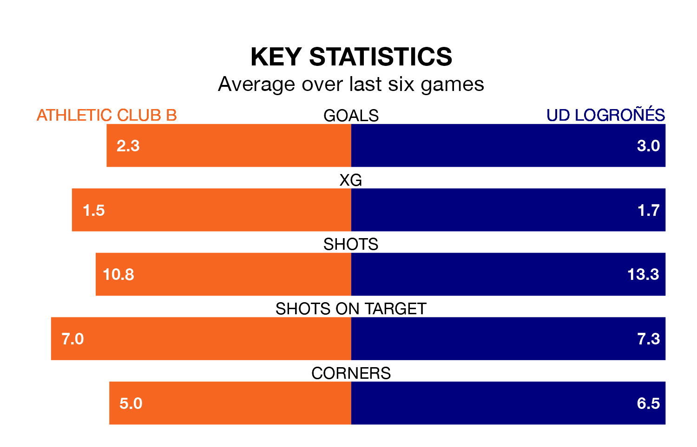

Two of Segunda División RFEF Group 2's top sides face each other in Sunday's early kick-off, when table-topping Athletic Club B host third-placed UD Logroñés.
Athletic Club B have picked up 14 wins and two draws from 17 games so far this season, and sit 10 points above the visitors going into the 11am match.
Logroñés, meanwhile, have won nine and drawn seven, picking up 34 points.
With 41 goals in 17 games so far this season, Logroñés are the league's highest scorers with 2.4 goals per game. And they are conceding fewer than average, letting in nine goals at a rate of 0.5 per game.
Athletic Club B are also above average scorers, with 2.2 goals per game, compared to a league average of 1.1. They have conceded 0.4 goals per game.
The home team are in fantastic form in Segunda División RFEF Group 2, with five wins and a draw from their last six games.
With four wins and a draw over that period, the visitors' form is worse – they have taken 13 points from 18, compared to Athletic Club B's 16.
In the last 10 years, Athletic Club B and Logroñés have played each other on 12 occasions. Athletic Club B won four of them, Logroñés five, and they drew three times.
On average, Athletic Club B scored 1.4 goals and Logroñés 1.3 in those matches.
Their last meeting was on September 3, when they played out a 0-0 draw.
Athletic Club B's last match was on January 6, a 3-0 win against Brea.
Logroñés beat Utebo 3-0 last time out, on Sunday.
Updated: 15:34, 08/01/24